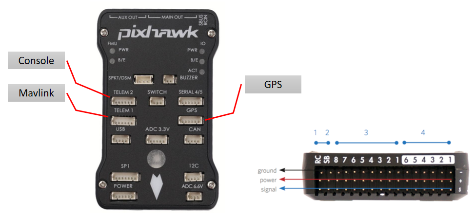
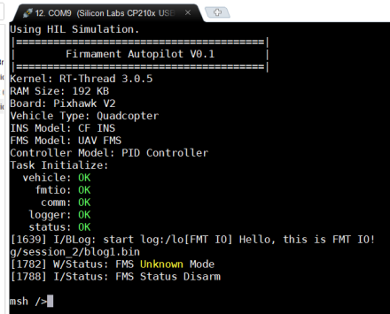

快速上手
硬件连接

硬件连接如图所示:
TELEM 2: 默认作为控制台Console的输出，默认波特率57600。如果在Mavlink Console中输入任意字符，则Console将被自动映射到Mavlink Console上。TELEM 1: 默认作为Mavlink的输出口，默认波特率57600。如果USB连接的话，则Mavlink则自动换到到USB设备上输出。GPS: 连接GPS模块，默认波特率9600。RC: 连接遥控器的PPM信号,目前最多支持8路PPM信号。SB: 连接遥控器的SBUS信号，目前还未支持。MAIN OUT: 支持最多8路PWM输出信号 (也可改为捕获输入信号)。AUX OUT: 支持最多6路PWM输出信号 (也可改为捕获输入信号)。其它：其它接口暂时还未支持。
编译环境
支持在Windows/Linux/Mac环境下编译，需要用到的工具链如下：
- 编译器: arm-none-eabi- toolchain (推荐版本:
7-2018-q2-update，其它版本未测试) - 编译工具：Scons (推荐版本：
v2.3.6)，同时Scons需要用到python2.7.x - 编辑器：推荐VS Code。使用VS Code打开
FMT_Firmware/fmt_fmu或者FMT_Firmware/fmt_io目录即可打开项目工程。 - USB驱动：下载 STM32 USB驱动 (For windows)
编译固件
在配置好了编译环境后，首先需要配置系统的环境变量。以Windows系统为例，进入Environment Variables界面，添加一个RTT_EXEC_PATH的环境变量，并且将其Value设置为arm-none-eabi- toolchain的下载地址，比如D:\gcc-arm-none-eabi-7-2018-q2-update-win32\bin。
同时，在命令行窗口中输入scons --version和python --version查看版本是否正常。完成以上步骤后，可以开始编译FMT固件。
编译FMT FMU固件
cd FMT_Firmware/fmt_fmu/target/pixhawk
scons -j4
编译完成后，固件fmt_fmu.bin将生成在build目录下。
编译FMT IO固件
cd FMT_Firmware/fmt_io/project
scons -j4
编译完成后，固件fmt_io.bin将生成在build目录下。
固件下载
FMT包含FMU (Flight Management Uinit) 固件和IO (Input/Output)固件，需要分别进行下载。FMT使用pixhawk内置的bootloader进行固件的下载，所以在下载了FMT的固件后，也能够很方便的刷回PX4或者APM的固件。
下载FMT FMU固件
目前有两种方式下载FMU固件: 通过uploader.py脚本下载或者通过QGroundControl (QGC)下载。
-
uploader.py脚本： 将飞控连接usb线插入PC，然后在
fmt_fmu/target/pixhawk目录中执行python uploader.py。脚本将自动找到对应端口并开始下载位于build目录下的fmt_fmu.bin固件。 -
QGC地面站： 进入Firmware Setup页面，然后使用usb线连接飞控和PC。这时会弹出选择固件的界面，选择
Advanced Settings，然后在下拉框中选择Custom firmware file，然后选择编译的fmt_fmu.bin固件即可开始下载。

固件下载成功后，可以使用串口(TELEM 2, baudrate: 57600)或者QGC的Mavlink Console连接控制台(console)，如下图所示为飞控开机打印的信息：

除此之外，还可以在VS Code中运行fmt_fmu/target/pixhawk/mavlink_shell.py脚本来连接console。
下载FMT IO固件
协处理器IO的固件通过FMU的文件系统进行下载。首先需要连接将编译的fmt_io.bin固件放到sd卡上，可以通过读卡器拷贝。而更方便的方式是通过QGC的FTP功能进行文件上传 (Widget->Onboard Files)。
文件上传后，进入控制台(console)，输入如下指令:
fmtio upload $path/fmt_io.bin
其中$path为存放fmt_io.bin的路径，如果是放在根目录，则可以省略，直接输入uploader即可。
注意：如果是第一次下载IO固件，在输入upload指令后，需要手动按一下位于Pixhawk右侧的IO复位按钮，使得IO进入bootloader程序。
下载完成后，在控制台输入fmtio hello指令，如果IO固件更新成功，应该看到IO发来的如下消息：
msh />fmtio hello
msh />[IO]:Hello, this is FMT IO!
刷回PX4固件
首先同样利用QGC地面站下载PX4/APM的固件到FMU。 PX4在上电会检查IO的固件版本并进行更新。但是由于目前FMT IO还不识别PX4的重启指令，故无法重启进入bootloader模式，所以需要手动进行IO固件的下载，目前有两种方法：
- 按住安全开关 (safety switch)， 然后给飞控上电，这时候IO将会停留在bootloader中，这时候再按照之前的步骤刷新PX4/APM的固件到FMU。当FMU固件更新成功后，IO固件也将自动进行更新。
- 在刷了FMU固件后，进入nsh的控制台，输入指令
px4io forceupdate 14662 /etc/extras/px4_io-v2_default.bin，在输入完指令后，立马按下IO的复位键，则可以开始IO固件的烧写。
代码调试
FMT提供了丰富的调试手段，常用的比如通过console打印，log日志记录以及jtag连接进行单独调试。
Console打印
在FMU中可以调用console_printf()函数进行打印，用法类似printf()。信息将被打印显示在console设备上，支持中断上下文中打印。
ULOG日志
ULOG为rt-thread提供的文字日志系统，支持不同level等级的日志信息输出，比如Error,Warning,Info,Debug等，对应的函数接口为：
ulog_e(TAG, ...) // Error
ulog_w(TAG, ...) // Warning
ulog_i(TAG, ...) // Info
ulog_d(TAG, ...) // Debug
FMT支持将ulog日志输出到多个后端，比如console和file system。比如这条代码
ulog_e("Test", "Hello, this is %s", "FMT");
将在console打印如下信息，并且这条信息将被记录到log/session_x/ulog.txt中
[1770] E/Test: Hello, this is FMT
JTAG调试
TO BE ADD